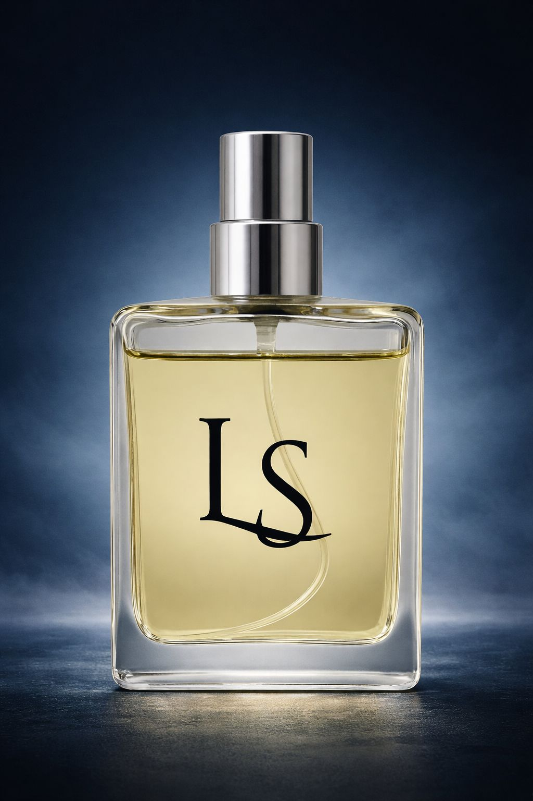

Ref. olfativa: Sauvage Dior
Família olfativa: Amadeirado Aromático
Perfil: Fresco, intenso, masculino moderno
Uma fragrância vibrante com abertura cítrica e especiada, evoluindo para um corpo aromático limpo e um fundo amadeirado seco. As características olfativas podem lembrar Sauvage Dior.
Este é um produto original da marca LS Essence, os produtos de outras marcas usados como referência olfativa não possuem qualquer vínculo com a LS Essence e nem com este produto. Citar referências olfativas não constitui promessa de produto idêntico e nem a mesma experiência sensorial, serve apenas para indicar uma direção olfativa.